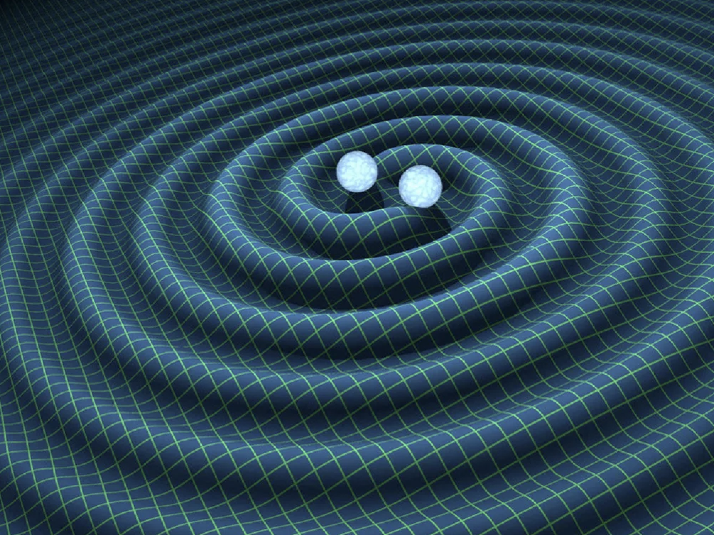
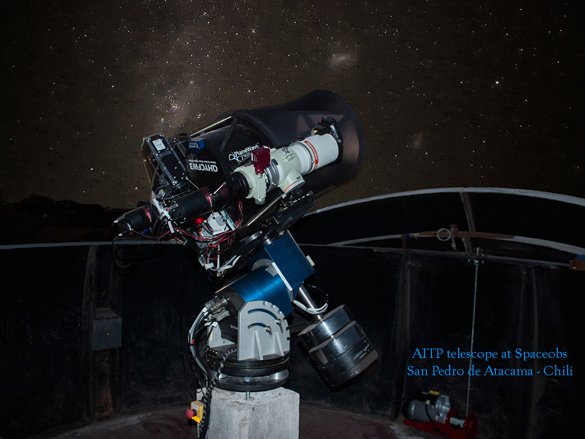
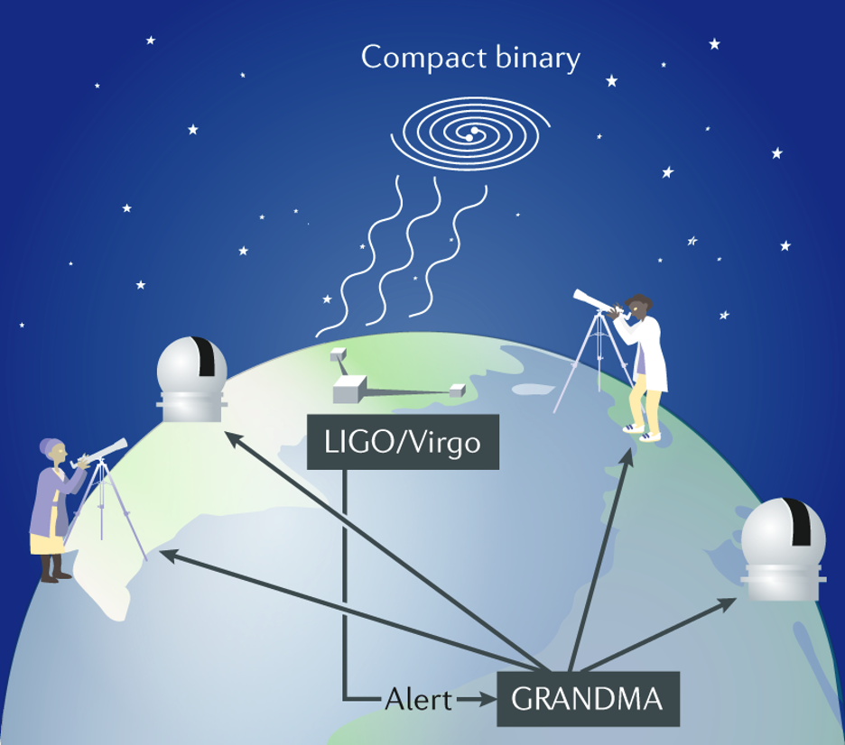

the grandma citizen science website on gravitational wave astronomy.
supported by GRANDMA and université de paris.
Welcome aboard
When two neutron stars collide, they create one of the most powerful explosions in the universe - a kilonova. These rare events forge heavy elements like gold and platinum and send ripples through space called gravitational waves. With Kilonova Catcher, you can help capture the fleeting light from these collisions using your own telescope.
Join a worldwide team of amateur and professional astronomers. All you need is a telescope and your curiosity!
By joining Kilonova Catcher, you'll have a front-row seat to some of the universe's most powerful events. Sign up today and we can help you get started!
Have time on a shared telescope? You can join too!
All about Kilonova Catcher
 The figure above shows two neutron stars in their final moments before merger. The cataclysmic collision produces a kilonova, and sometimes - within seconds - a short gamma-ray burst! Credit: NASA GSFC
The figure above shows two neutron stars in their final moments before merger. The cataclysmic collision produces a kilonova, and sometimes - within seconds - a short gamma-ray burst! Credit: NASA GSFC
Catch the Light from Cosmic Collisions
Neutron stars are some of the densest objects in the universe. When two of them merge, the violent collision releases gravitational waves — ripples in the fabric of space itself — and triggers one of the universe's most brilliant and fleeting explosions: a kilonova. These short-lived bursts of light last only days to weeks, sometimes accompanied by a short gamma-ray burst and its fading afterglow. These events are rare, fast, and gone before most telescopes can respond — yet they are among our most powerful tools for understanding how the universe's heaviest elements formed and how matter behaves under extreme gravity. The goal of Kilonova Catcher is to capture them. We are building a worldwide community of telescope operators ready to respond the moment an alert arrives — and help secure what would otherwise be lost forever.

Credit: R. Hurt - Caltech / JPLJoin with Your Telescope
If you have a telescope (8 inches or larger) or temporary access to one, you can be part of our global network of volunteers. Amateur astronomers just like you receive and respond to Kilonova Capture alerts, point their telescopes on likely locations of kilonova, and document these cosmic explosions to contribute directly to astrophysics research. No experience is required. Our members and leaders can help you get started!

Credit: R. Hellot - AITP Observatory in San PedroWork Side by Side with Scientists
Kilonova Catcher (KNC) is a citizen science program in partnership with the GRANDMA Collaboration — an international network of professional telescopes, astronomers, particle physicists, and astrophysicists. Together, we respond to alerts from gravitational wave detectors like LIGO, Virgo, and KAGRA, recording the fleeting light of kilonovae, gamma-ray bursts, and other fast transients. When your images contribute to the light curve of an event, you become part of the scientific record! You are credited alongside professional astronomers in peer-reviewed publications and real-time dispatches to the global astronomy community through the NASA General Coordinates Network (GCN).

Credit: GRANDMA CollaborationWant to know more?
Find out more at the links below: